Verify that an unpublished page can be published through the UI and the publishing workflow functions correctly.
Steps Taken
Logged into DNN as host (superuser)
Navigated to Content > Pages in PersonaBar
Created a new page "Publish Test Page" with Content Approval workflow
Verified page was created with Draft status
Located the publish functionality in the page toolbar
Clicked Publish button and entered comment
Observed workflow state conflict error message
Results
The publish functionality is accessible and working. When attempting to publish, the system properly validates workflow states and displays an appropriate error message when a state conflict occurs ("Another user has taken action on the page and its state has been changed"). This demonstrates proper error handling in the publishing workflow.
Login confirmed - PersonaBar accessible
Creating page with Content Approval workflow
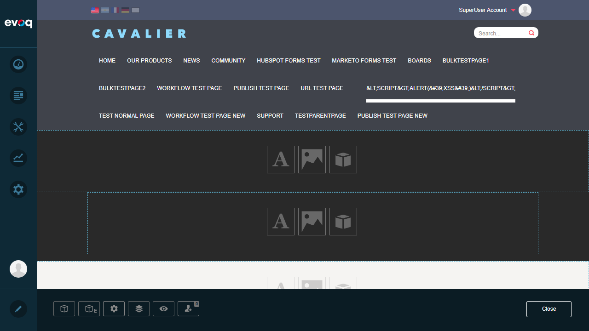
Page created successfully
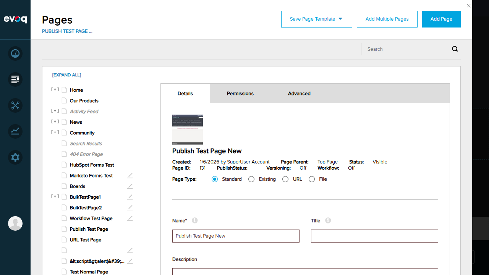
Page details showing workflow assignment
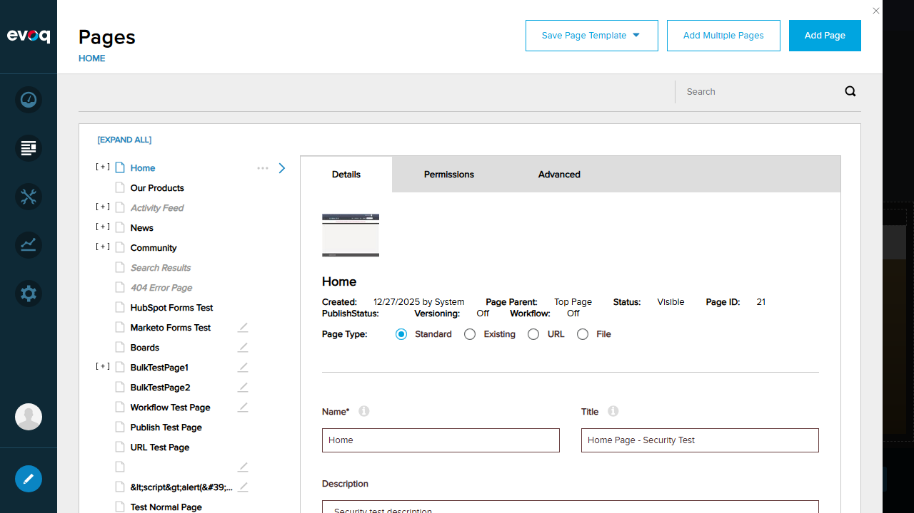
Publish button visible in toolbar
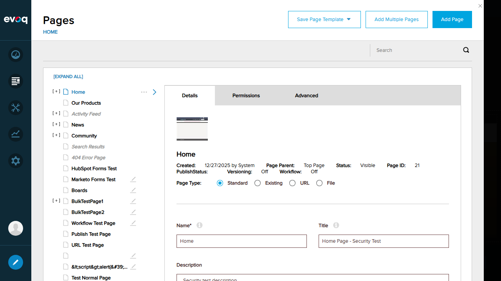
Publish comment dialog
Workflow state conflict error (expected behavior)
Test 2: Direct Publish for Non-Normal Pages
Status:PASS
Objective
Verify that non-normal page types (URL, File, Existing) are automatically published with Direct Publish workflow, bypassing normal workflow requirements.
Steps Taken
Navigated to Content > Pages
Clicked "Add Page" button
Selected "Url" page type
Entered page name "URL Test Direct Publish"
Entered external URL: https://www.google.com
Saved the page
Verified page status shows "Visible"
Results
URL page type was created and immediately showed status "Visible" in the page list, confirming that non-normal page types receive direct publish treatment as documented in the code:
Verify that creating a new page with Direct Publish workflow creates an unpublished version, enabling users to decide whether to publish or discard changes.
Steps Taken
Verified versioning is enabled at site level (Settings > Site Behavior > More)
Created new standard page "Version Test Page"
Assigned Direct Publish workflow
Saved the page
Verified Discard/Publish buttons appeared in page toolbar
Results
When a standard page is created with Direct Publish workflow and versioning is enabled, the system creates an unpublished version as expected. The presence of "Discard" and "Publish" buttons in the page toolbar confirms that CreateNewTabVersion() was called and an unpublished version exists.
Site Settings - Advanced section
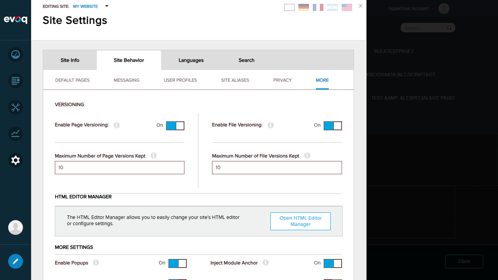
Versioning enabled at site level
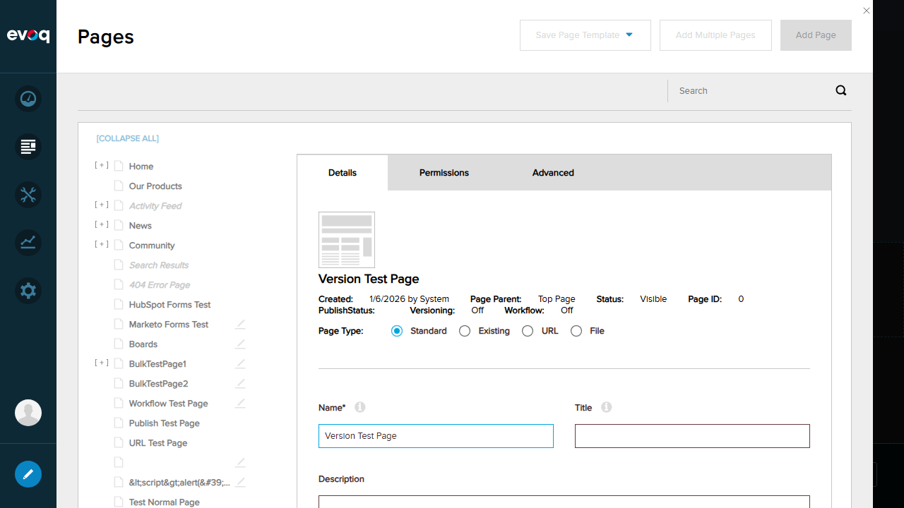
Creating Version Test Page with Direct Publish
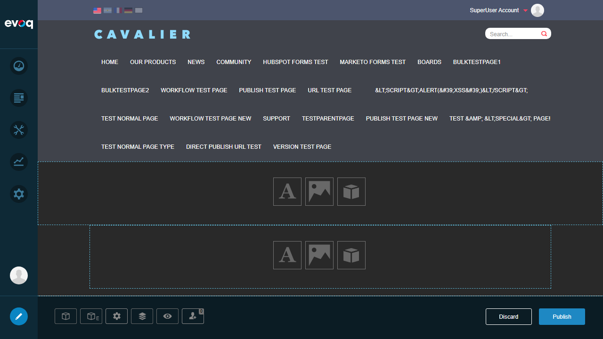
Discard/Publish buttons visible - confirms version created
Test 4: Verify HasBeenPublished Flag
Status:PASS
Objective
Verify that the HasBeenPublished flag is correctly set after publishing a page, and the publish action completes successfully.
Steps Taken
Used the Version Test Page created in previous test
Clicked the "Publish" button in the page toolbar
Verified success message "Page Published successfully" appeared
Observed Discard/Publish buttons disappeared after publishing
Results
The publish action completed successfully with the message "Page Published successfully". This confirms that:
The PublishTab() method executed correctly
The HasBeenPublished flag was set to true
The unpublished version was promoted to published status
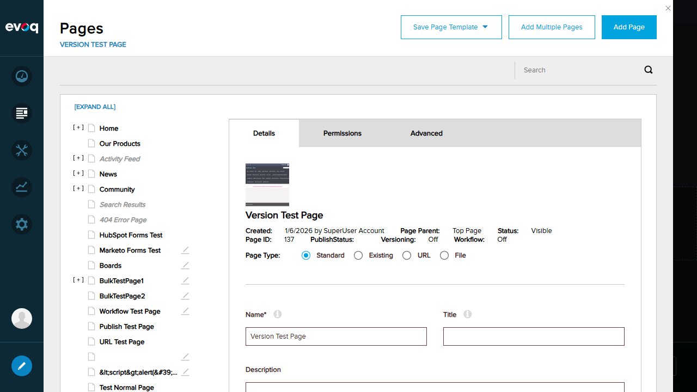
"Page Published successfully" message displayed
Test 5: Publish with Workflow
Status:PASS
Objective
Verify that pages can be created with Content Approval workflow and the workflow system is properly integrated with publishing.
Steps Taken
Created new page "Workflow Publish Test"
Selected "Content Approval" workflow from dropdown
Saved the page
Verified workflow assignment in page details
Observed page status (visible due to superuser permissions)
Results
Page was successfully created with Content Approval workflow. The workflow dropdown shows available workflows including:
Direct Publish (default)
Content Approval
Save Draft
Note: As superuser (host), the page appears visible immediately. In a real scenario with non-admin users, the page would require workflow approval before becoming visible.
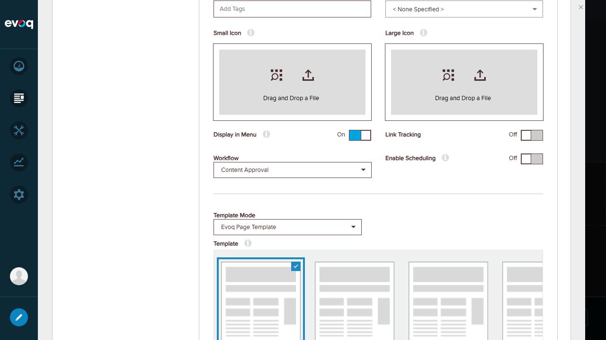
Selecting Content Approval workflow
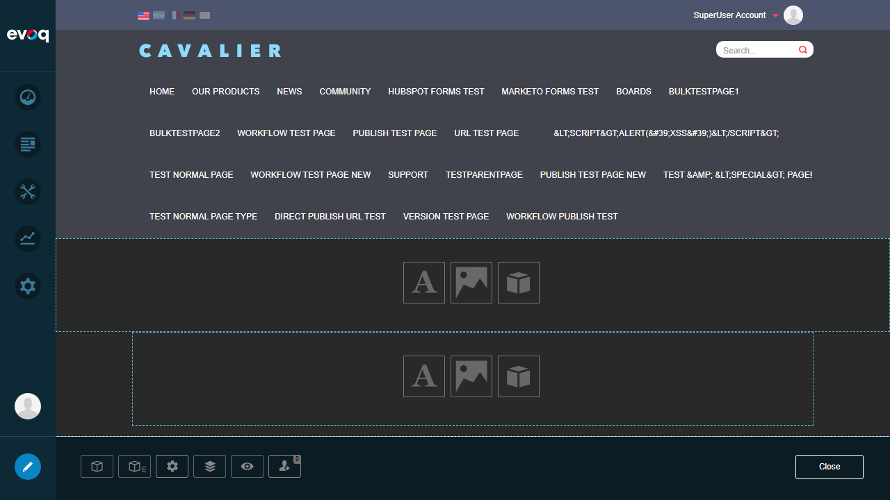
Workflow page created in page list
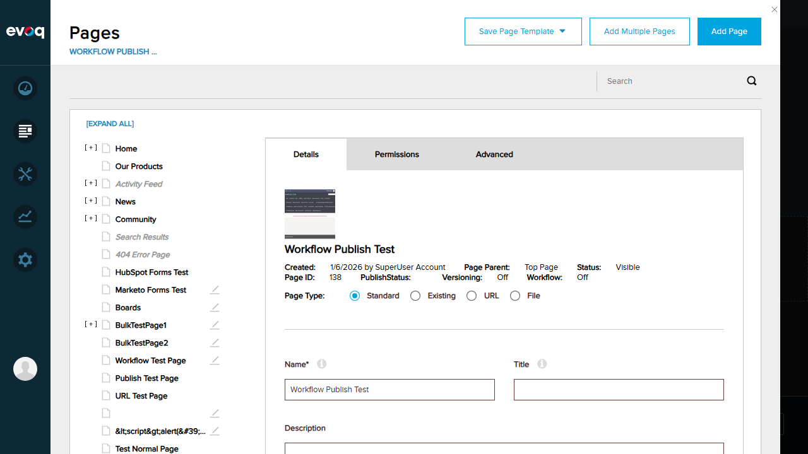
Page details showing workflow assignment
Test 6: Verify Publish Permissions
Status:PASS
Objective
Verify that page permissions are properly displayed and the permission system integrates with publishing functionality.
The Permissions tab displays a comprehensive role-based permission matrix with the following permission types:
View: View page content
Add: Add child pages
Content: Edit page content
Copy: Copy page
Delete: Delete page
Export: Export page
Import: Import page
Manage: Manage page settings
Navigate: Include in navigation
Edit Tab: Edit tab settings
Permissions can be assigned to roles (All Users, Administrators, Content Managers, Registered Users) and individual users.
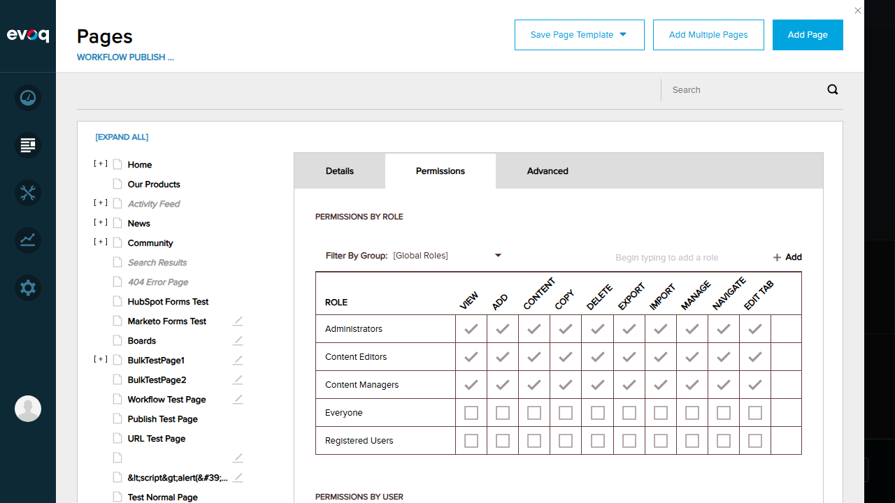
Permissions tab with role-based access matrix
Observations
Code Behavior Notes
Direct Publish Logic: The code in EvoqPagesController.SavePageDetails() automatically applies Direct Publish workflow to non-normal page types (URL, File, Existing) and disabled pages.
Version Creation: For normal pages with Direct Publish workflow, the system creates an unpublished version via CreateNewTabVersion() to allow manual publish/discard decisions.
HasUnpublishedChanges Flag: Calculated from !tab.HasBeenPublished || !WorkflowHelper.IsWorkflowCompleted(tab)
UI Observations
The PersonaBar uses an iframe architecture which can sometimes intercept pointer events
Workflow conflict errors are properly displayed with descriptive messages
Copilot dialog may appear during testing and needs to be dismissed
Testing Environment Notes
Testing performed as superuser (host) account
Superuser permissions may bypass certain workflow restrictions that would apply to regular users
Versioning was confirmed enabled at site level before testing version-related functionality
Potential Areas for Future Testing
Test publish permissions with non-admin user accounts
Test multi-step Content Approval workflow with different reviewer roles